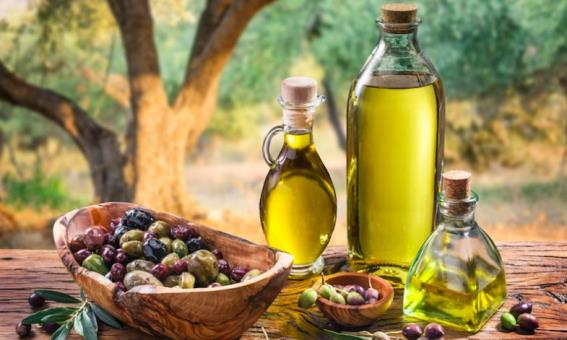

Zeytinyağının Faydaları
12 Mart 2023
Mutfakların olmazsa olmazı olan zeytinyağının cilt hastalıklarından karaciğere kadar vücuda birçok faydası bulunuyor. Her gün yarım yemek kaşığı zeytinyağı tüketmenin faydasına inanamayacaksınız. “Zeytinyağının faydaları nelerdir?” sorusunun yanıtı merak ediliyor. Zeytinyağının cilt hastalıklarından karaciğere kadar vücuda birçok faydası bulunuyor. Günlük hayatta mutfakta da çok tüketilen zeytinyağının faydaları merak ediliyor. Özellikle saçlara faydası ile bilinen zeytinyağının yararları saymakla bitmiyor. Araştırmacılar, her gün yarım yemek kaşığı zeytinyağı tüketenlerin herhangi bir kalp ve damar hastalığına yakalanma riskinin yüzde 15 daha düşük olduğunu tespit etti.
